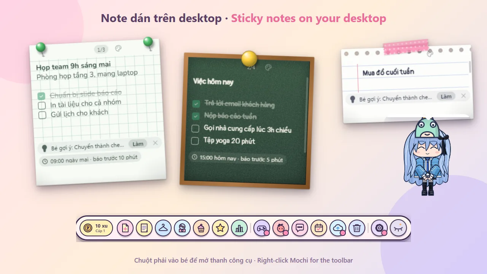
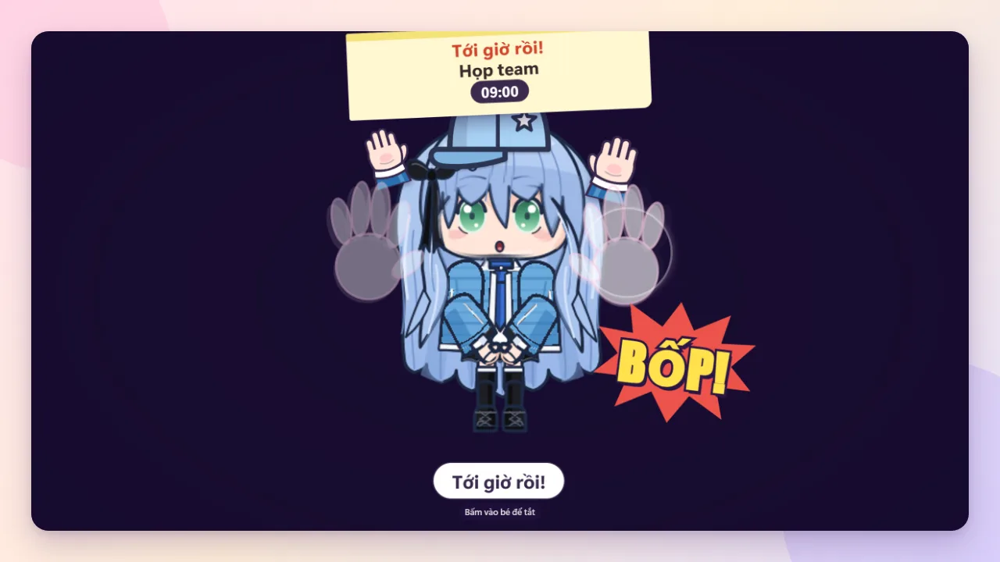
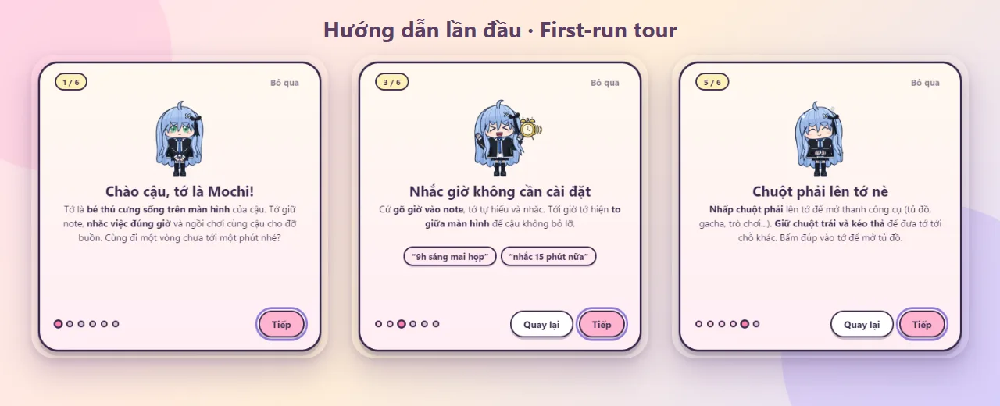
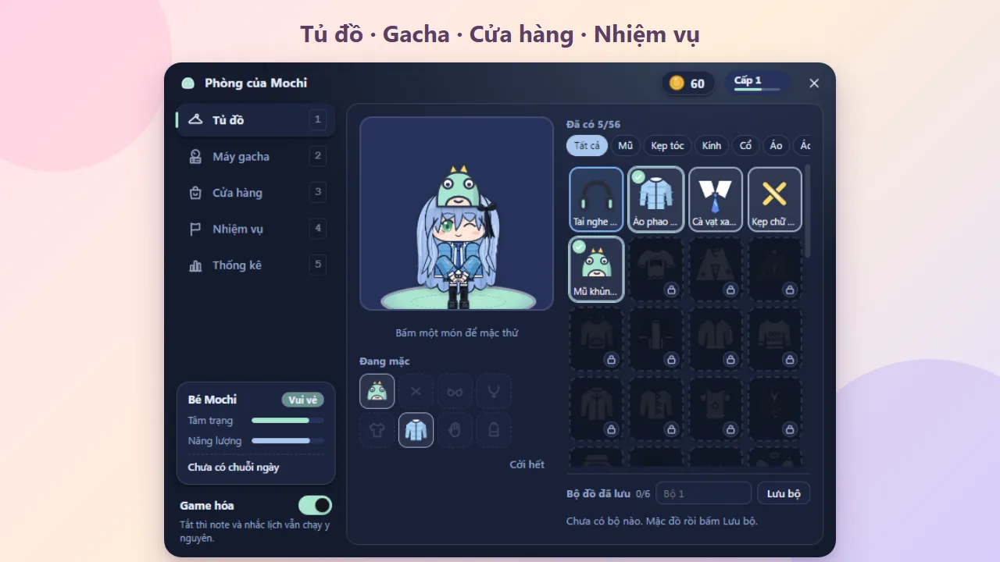
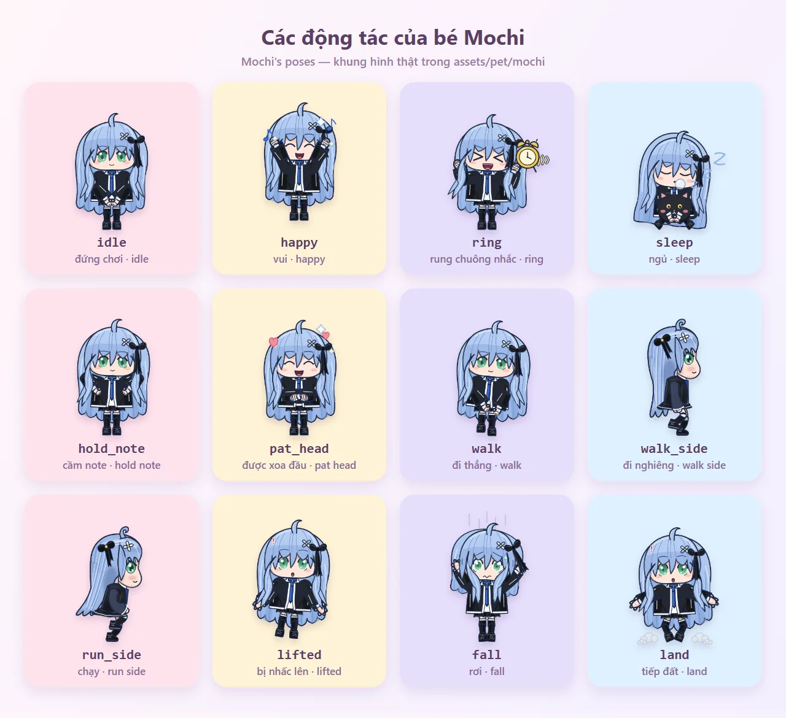

Desktop sticky notes
Many colors and paper styles (lined paper, chalkboard, index card), pins, clips, tape, checklists, a note list and a recoverable trash.
A desktop sticky notes app with Mochi, a tiny pet assistant. Type a time in natural Vietnamese like "họp 9h sáng mai" (meeting 9am tomorrow) and Mochi runs out to remind you. Free and open source.
Notes pinned to your screen and a desktop pet who reminds you, politely.
Many colors and paper styles (lined paper, chalkboard, index card), pins, clips, tape, checklists, a note list and a recoverable trash.
Type "9h sáng mai họp", "nhắc 15 phút nữa" or "15h gọi khách" in Vietnamese, with or without diacritics. Repeats, lead time and snooze included.
If you miss a reminder, Mochi jumps to the middle of the screen and slams her hands. The longer you wait, the angrier she gets (5 levels).
Quiet hours (22:00 to 07:00 by default). During meetings, screen sharing or fullscreen apps (Zoom, Teams, Meet...) she only nudges you in a corner.
Type "bé ơi, dọn dẹp" (clean up) or "bé ơi, tập trung 25 phút" (focus 25 min) in a note, or press Ctrl+Alt+B for a quick command box.
Walks, runs, sleeps in a bed, reads, drinks tea, dances, gets picked up, tossed or patted. Tidies expired notes into the trash.
Earn coins by using notes, roll gacha, dress Mochi, take quests. Turn gamification off and notes and reminders keep working.
25-minute Focus mode, a daily repeating checklist and an end-of-day summary.
Back up to a folder you choose (ideal inside OneDrive or Google Drive), keep the last 30 copies, restore from the tray menu.
Updates itself through GitHub Releases, plus a 6-step first-run tour for newcomers.
Notes on your desktop, the big alert, the first-run tour and Mochi's room.




Mochi is a reminder assistant and a lovable desktop pet: walking, running, sleeping, reading, drinking tea, dancing. Try typing "bé ơi, múa" (dance).
Type these in a note and Mochi understands the time:
9h sáng mai họpnhắc 15 phút nữahọp 3h chiều nay15h gọi khách
Download from the Releases page (Windows 10/11). Latest version: v0.10.0.
MochiNotes-Setup-0.10.0-x64.exeIntel/AMD Windows. One click, no admin rights, shortcuts, auto-update.
MochiNotes-Setup-0.10.0-arm64.exeWindows on ARM.
MochiNotes-Portable-0.10.0.exeRun without installing (x64).
MochiNotes-0.10.0-x64.zipUnzip and run Mochi Notes.exe.
Builds are not code-signed yet, so Windows may show "Windows protected your PC" the first time. This is normal for new software:
To make sure your download was not tampered with, compare its hash with SHA256SUMS.txt attached to each release:
certutil -hashfile MochiNotes-Setup-0.10.0-x64.exe SHA256Uninstall from Settings → Apps as usual. Uninstalling keeps your notes. Data lives in %APPDATA%\Mochi Notes.
Yes. Mochi Notes is completely free and open-source software under the MIT license. No ads, no account. Note that the Mochi character artwork is copyright Joiha and is not covered by the MIT license (see ASSETS-NOTICE).
All notes, settings and game progress stay on your PC in %APPDATA%\Mochi Notes. There is no account and no tracking. The only network use is checking for updates through GitHub Releases. You can back up to OneDrive or Google Drive yourself if you like.
No. Uninstalling keeps your notes. Your data stays in %APPDATA%\Mochi Notes, so reinstalling picks up where you left off.
Yes. Mochi Notes runs on Windows 10 and Windows 11, with builds for Intel/AMD (x64) and ARM (ARM64).
The installer is not code-signed yet, so SmartScreen may warn you the first time, which is common for new software. Click More info, then Run anyway, and compare the SHA256 with SHA256SUMS.txt to be sure the file is intact.
Mochi currently parses times typed in Vietnamese ("9h sáng mai họp", "nhắc 15 phút nữa"), including without diacritics. The app is Vietnamese-first.